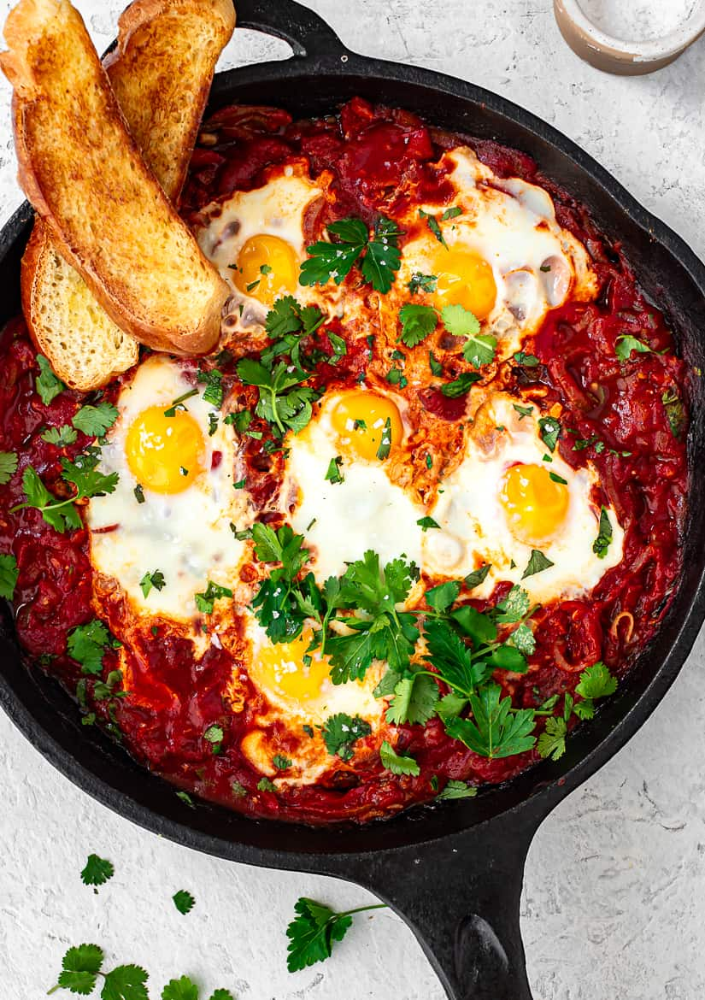

Shakshouka

Popular Middle East dish made of poached eggs in rich tomato sauce
Shakshouka is a healthy and nutritious dish that originates
from the Middle East. It is a popular choice for breakfast
but can be enjoyed at any time of day. The dish consists of
poached eggs in rich tomato and bell peppers sauce with added
cumin.
Shakshouka is easy to make, inexpensive, healty and very
comforting. Different spices can be added to alter the
flavour.
Ingredients
- eggs
- tomatoes
- bell peppers (optional)
- olive oil or butter
- garlic
- onion
- cumin
- hot and sweet paprika
- parsley
Steps
- Heat 1 tablespoon of olive oil or butter in a saucepan
- And 1 clove of chopped garlic and half an onion
- Add chopped tomatoes and let them simmer over medium heat.
- As the sauce thickens, add 1 teaspon of hot paprika, 2 teaspoons
of sweet paprika and 2 teaspoons of cumin and let it simmer for
a few mins.
- Make some holes in the sauce, crack the eggs and nestle
them in the holes Let the simmer in the sauce until the whites
have settled.
- Garnish with parsley and serve while hot.